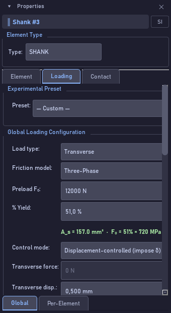

Bolt Analysis Studio 1.0.0 · Guia de uso narrado

| Controle | O que faz |
|---|---|
| Preset | Condições experimentais prontas; Custom para as suas. |
| Load type | Transverse, Axial ou Combined. |
| Friction model | Three-Phase é o padrão validado. |
| Preload F₀ / % Yield | Pré-carga em newtons, ou a fração do escoamento; um recalcula o outro. |
| Control mode | Displacement-controlled impõe δ; force-controlled impõe a força. |
| Transverse disp. / Transverse force | A amplitude do que é imposto; o outro campo fica cinza. |
| Frequency | Frequência do ensaio, em hertz. |
| Duration mode / Duration | Em ciclos ou em segundos; N é mostrado embaixo. |
| External force / Torque / ΔT | Carga axial externa constante, torque aplicado e variação térmica. Opcionais. |
| Locking Device › Device / Slip onset / Δμ / Junker class | Dispositivo de travamento, como porca autotravante ou arruela de pressão: mostra o início do deslizamento, o acréscimo de atrito Δμ e a classe Junker. Informativo: some o Δμ em Contact, Initial μ, se quiser o efeito. |
| VDI 2230 Load Factors › Stress ratio R / Dyn. factor φ / Load-plane n / Waveform | Fatores de carga da VDI 2230: razão de tensões, fator dinâmico, plano de introdução da carga n e forma de onda da excitação. |
| Curve Shape (Stage II) › F∞ ratio / μ recovery gain / Creep ε₀ / Noise σ | Forma da curva na segunda fase: patamar final como fração de F₀, ganho de recuperação do atrito, fluência inicial e ruído para curvas sintéticas. |